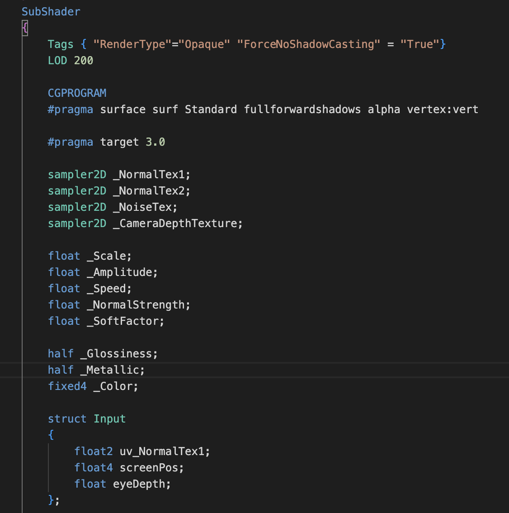
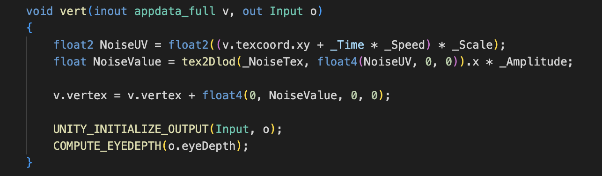
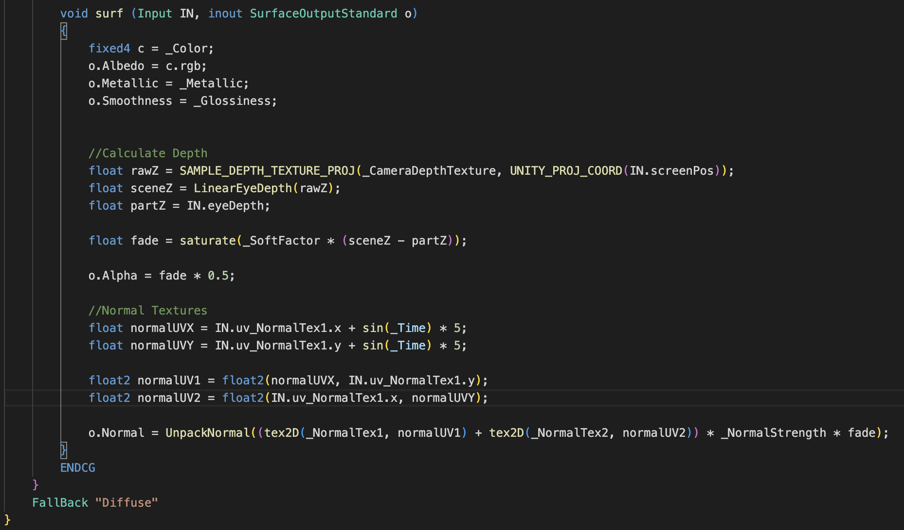
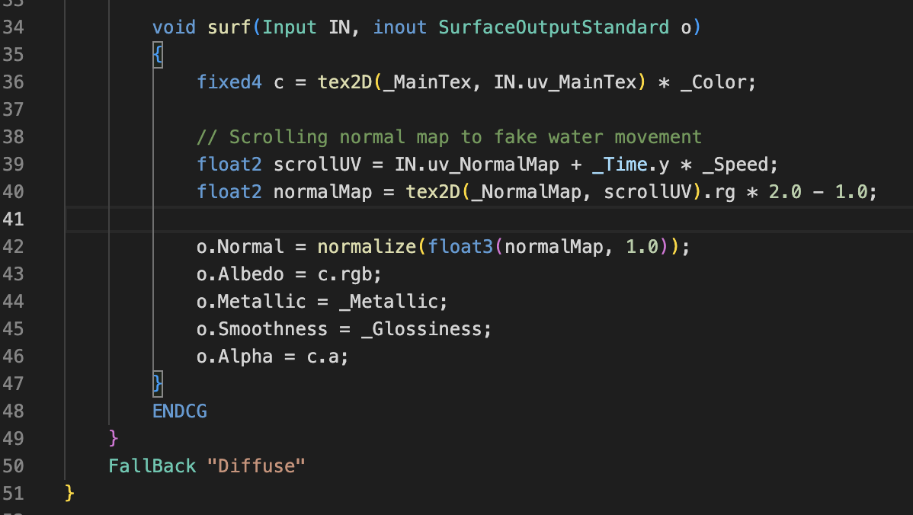

Reference Video: https://www.youtube.com/watch?v=wcGT_jji5xQ
First of all, download the water texture in PNG format to enhance the realism. Use two different water texture images and one noise file.
The SubShader block sets up rendering properties for an opaque object with specific tags, LOD, and shader targets. It includes texture samples, shader parameters, and an input structure for passing data from the vertex to the surface shader.
The CGPROGRAM block contains the actual shader code, specifying the surface shader function, lighting model, and other properties.
  I wanted to apply the water shader to a Sphere, but it wasn't visible. The key difference in the modified surf function of "WaterShader2" is the consideration of the object's local space coordinates.
